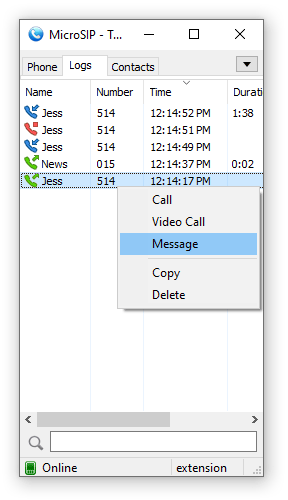
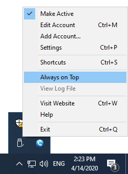

| |
|
Platforms
Get Involved
Project
Legal (Website)
|
MicroSIPLightweight and reliable SIP softphone for WindowsMicroSIP is a SIP softphone for Windows designed for everyday business communication and professional VoIP use. Connect to any SIP provider or PBX system and make high-quality voice and video calls from your desktop. Whether you work in an office, remotely, or manage your own SIP infrastructure, MicroSIP provides a simple and dependable communication solution without unnecessary complexity. Screenshots
 
Why MicroSIP
Designed for real-world communicationMicroSIP is commonly used with:
CompatibilityMicroSIP works with standard SIP infrastructure, including SIP providers and PBX systems. Supported and commonly used with:
Built on the proven PJSIP stack and designed for standards-based SIP interoperability. 
 FeaturesVoice and video communicationHigh-quality voice callsMessaging and presenceSecurityAudio qualitySupports a wide range of codecs including: Opus, G.711 A-law and μ-law, G.722, G.721.1, G.723, G.729, GSM, AMR, AMR-WB, iLBC, Speex, SILK, and Linear PCM. Additional audio features include WebRTC-based echo cancellation and voice activity detection. Lightweight and portableAccessibility and localization
Ongoing developmentMicroSIP is actively maintained and continuously improved to ensure compatibility with modern Windows versions, SIP infrastructure, and evolving communication technologies. The project focuses on reliability, standards compliance, performance, and long-term usability. If your business relies on MicroSIP, you may consider supporting its continued development to help sustain ongoing maintenance and improvements. |